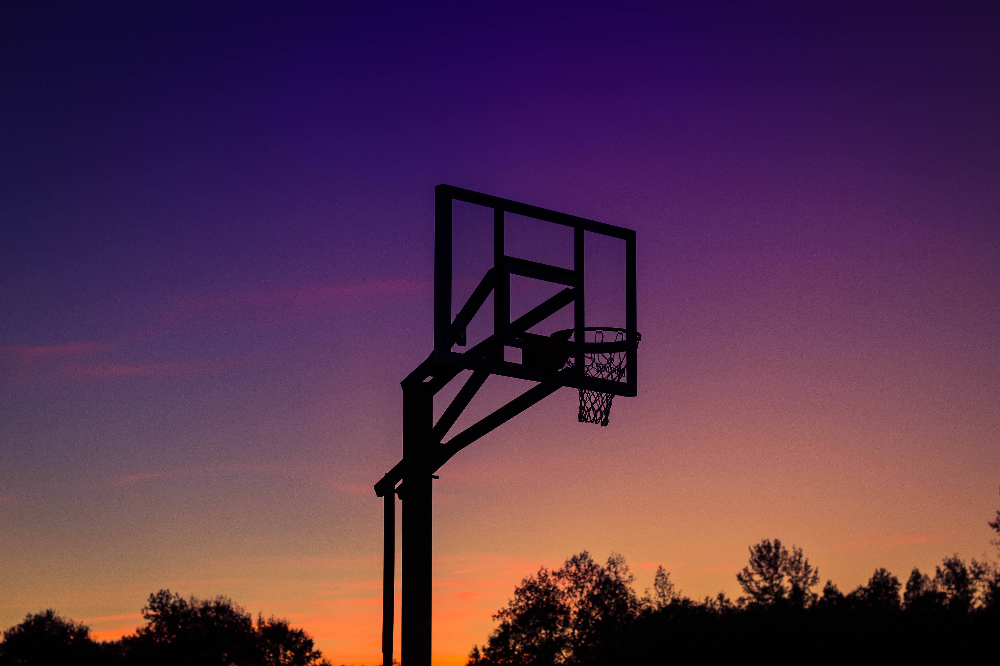

Baseball.
By - Tejas Argade..

/p>
History.
In December 1891, James Naismith, a Canadian professor of physical education and instructor at the International Young Men's Christian Association Training School (now Springfield College) in Springfield, Massachusetts, was trying to keep his gym class active on a rainy day. He sought a vigorous indoor game to keep his students occupied and at proper levels of fitness during the long New England winters. After rejecting other ideas as either too rough or poorly suited to walled-in gymnasiums, he invented a new game in which players would pass a ball to teammates and try to score points by tossing the ball into a basket mounted on a wall. Naismith wrote the basic rules and nailed a peach basket onto an elevated track. Naismith initially set up the peach basket with its bottom intact, which meant that the ball had to be retrieved manually after each "basket" or point scored. This quickly proved tedious, so Naismith removed the bottom of the basket to allow the balls to be poked out with a long dowel after each scored basket.
Equipment.
The only essential equipment in a basketball game is the ball and the court: a flat, rectangular surface with baskets at opposite ends. Competitive levels require the use of more equipment such as clocks, score sheets, scoreboard(s), alternating possession arrows, and whistle-operated stop-clock systems.